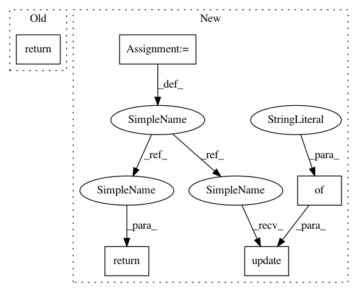

d66f559640be5681e03e8d6cea6cb2f1dad4ebce,softqlearning/algorithms/sql.py,SQL,get_snapshot,#SQL#Any#,315
Before Change
if self._save_full_state:
return {"epoch": epoch, "algo": self}
return {
"epoch": epoch,
"policy": self.policy,
"qf": self.qf,
"env": self.env,
}
def __getstate__(self):
Get Serializable state of the RLALgorithm instance.
After Change
of policy, Q-function, and environment instances.
state = {
"epoch": epoch,
"policy": self.policy,
"qf": self.qf,
"env": self.env,
}
if self._save_full_state:
state.update({"replay_buffer": self.pool})
return state
In pattern: SUPERPATTERN
Frequency: 3
Non-data size: 5
Instances
Project Name: rail-berkeley/softlearning
Commit Name: d66f559640be5681e03e8d6cea6cb2f1dad4ebce
Time: 2018-02-18
Author: haarnoja@berkeley.edu
File Name: softqlearning/algorithms/sql.py
Class Name: SQL
Method Name: get_snapshot
Project Name: rail-berkeley/softlearning
Commit Name: d542e94e15616ce4aa164cbfa77f19b9a56d0d9f
Time: 2018-11-07
Author: hartikainen@berkeley.edu
File Name: softlearning/algorithms/rl_algorithm.py
Class Name: RLAlgorithm
Method Name: _evaluate
Project Name: rail-berkeley/softlearning
Commit Name: d66f559640be5681e03e8d6cea6cb2f1dad4ebce
Time: 2018-02-18
Author: haarnoja@berkeley.edu
File Name: softqlearning/algorithms/sql.py
Class Name: SQL
Method Name: get_snapshot
Project Name: rail-berkeley/softlearning
Commit Name: 7ea7fd92ba1f23b99c0d383501d9c31a2779f799
Time: 2018-02-24
Author: haarnoja@users.noreply.github.com
File Name: softqlearning/algorithms/sql.py
Class Name: SQL
Method Name: get_snapshot